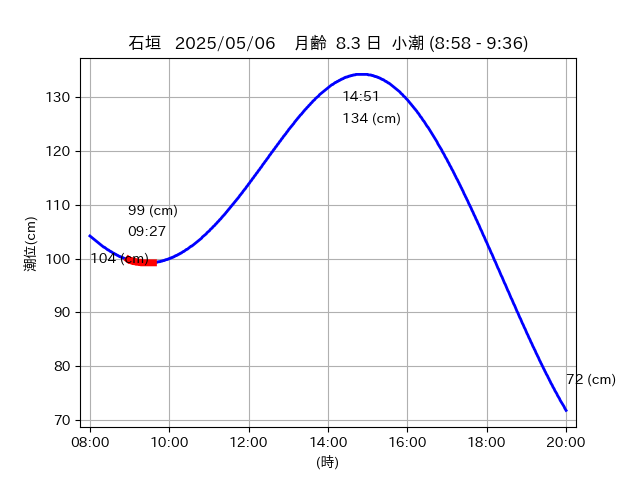
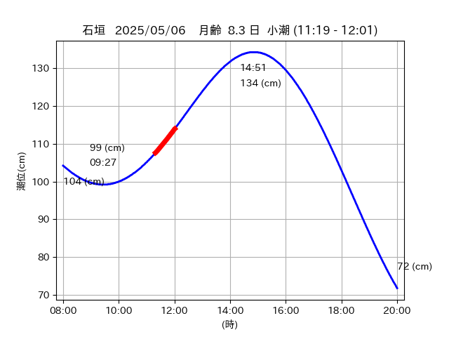
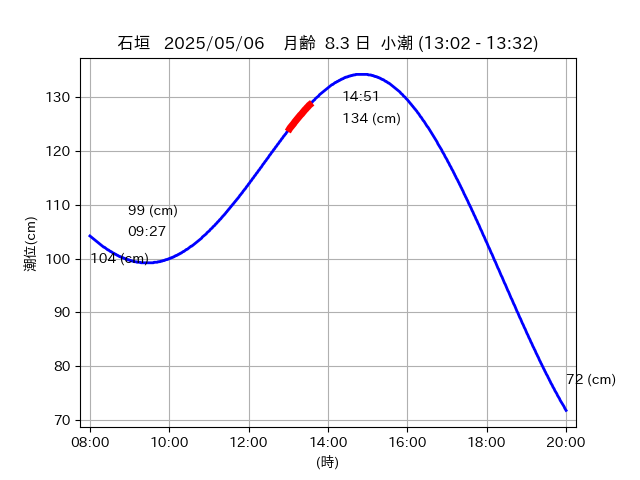

<!DOCTYPE html>
<html>
<head>
    
    <meta http-equiv="content-type" content="text/html; charset=UTF-8" />
    
        <script>
            L_NO_TOUCH = false;
            L_DISABLE_3D = false;
        </script>
    
    <style>html, body {width: 100%;height: 100%;margin: 0;padding: 0;}</style>
    <style>#map {position:absolute;top:0;bottom:0;right:0;left:0;}</style>
    <script src="https://cdn.jsdelivr.net/npm/leaflet@1.9.3/dist/leaflet.js"></script>
    <script src="https://code.jquery.com/jquery-3.7.1.min.js"></script>
    <script src="https://cdn.jsdelivr.net/npm/bootstrap@5.2.2/dist/js/bootstrap.bundle.min.js"></script>
    <script src="https://cdnjs.cloudflare.com/ajax/libs/Leaflet.awesome-markers/2.0.2/leaflet.awesome-markers.js"></script>
    <link rel="stylesheet" href="https://cdn.jsdelivr.net/npm/leaflet@1.9.3/dist/leaflet.css"/>
    <link rel="stylesheet" href="https://cdn.jsdelivr.net/npm/bootstrap@5.2.2/dist/css/bootstrap.min.css"/>
    <link rel="stylesheet" href="https://netdna.bootstrapcdn.com/bootstrap/3.0.0/css/bootstrap-glyphicons.css"/>
    <link rel="stylesheet" href="https://cdn.jsdelivr.net/npm/@fortawesome/fontawesome-free@6.2.0/css/all.min.css"/>
    <link rel="stylesheet" href="https://cdnjs.cloudflare.com/ajax/libs/Leaflet.awesome-markers/2.0.2/leaflet.awesome-markers.css"/>
    <link rel="stylesheet" href="https://cdn.jsdelivr.net/gh/python-visualization/folium/folium/templates/leaflet.awesome.rotate.min.css"/>
    
            <meta name="viewport" content="width=device-width,
                initial-scale=1.0, maximum-scale=1.0, user-scalable=no" />
            <style>
                #map_d2a504e96111cf37d32c4f9b49d8a0c0 {
                    position: relative;
                    width: 2048.0px;
                    height: 1600.0px;
                    left: 0.0%;
                    top: 0.0%;
                }
                .leaflet-container { font-size: 1rem; }
            </style>
        
</head>
<body>
    
    
            <div class="folium-map" id="map_d2a504e96111cf37d32c4f9b49d8a0c0" ></div>
        
</body>
<script>
    
    
            var map_d2a504e96111cf37d32c4f9b49d8a0c0 = L.map(
                "map_d2a504e96111cf37d32c4f9b49d8a0c0",
                {
                    center: [24.214, 124.022],
                    crs: L.CRS.EPSG3857,
                    ...{
  "zoom": 12,
  "zoomControl": true,
  "preferCanvas": false,
}

                }
            );

            

        
    
            var tile_layer_2ee058ae193e40b4bc194ac935bd5bbc = L.tileLayer(
                "https://cyberjapandata.gsi.go.jp/xyz/seamlessphoto/{z}/{x}/{y}.jpg",
                {
  "minZoom": 0,
  "maxZoom": 18,
  "maxNativeZoom": 18,
  "noWrap": false,
  "attribution": "\u5730\u7406\u9662\u5730\u56f3",
  "subdomains": "abc",
  "detectRetina": false,
  "tms": false,
  "opacity": 1,
}

            );
        
    
            tile_layer_2ee058ae193e40b4bc194ac935bd5bbc.addTo(map_d2a504e96111cf37d32c4f9b49d8a0c0);
        
    
            var marker_73ff694f9e5c46153869f152c7069673 = L.marker(
                [24.211, 124.0061],
                {
}
            ).addTo(map_d2a504e96111cf37d32c4f9b49d8a0c0);
        
    
            var icon_f83828069edf81fa0a0f1abda81bea32 = L.AwesomeMarkers.icon(
                {
  "markerColor": "orange",
  "iconColor": "white",
  "icon": "info-sign",
  "prefix": "glyphicon",
  "extraClasses": "fa-rotate-0",
}
            );
        
    
        var popup_e4213e312b448ce93dbcca3d2a563e04 = L.popup({
  "maxWidth": "100%",
});

        
            
                var html_5fd23b0a1bb9a175c5afc011e16159e9 = $(`<div id="html_5fd23b0a1bb9a175c5afc011e16159e9" style="width: 100.0%; height: 100.0%;"><table><tr><td></td></tr><tr><td><center>20250506 No.1 </center></table></td></tr></table</div>`)[0];
                popup_e4213e312b448ce93dbcca3d2a563e04.setContent(html_5fd23b0a1bb9a175c5afc011e16159e9);
            
        

        marker_73ff694f9e5c46153869f152c7069673.bindPopup(popup_e4213e312b448ce93dbcca3d2a563e04)
        ;

        
    
    
                marker_73ff694f9e5c46153869f152c7069673.setIcon(icon_f83828069edf81fa0a0f1abda81bea32);
            
    
            var poly_line_a76937f746a4f91349ad8622778e66b6 = L.polyline(
                [[24.211, 124.0061], [24.2114, 124.0076]],
                {"bubblingMouseEvents": true, "color": "#FF00FF", "dashArray": null, "dashOffset": null, "fill": false, "fillColor": "#FF00FF", "fillOpacity": 0.2, "fillRule": "evenodd", "lineCap": "round", "lineJoin": "round", "noClip": false, "opacity": 1.0, "smoothFactor": 1.0, "stroke": true, "weight": 3}
            ).addTo(map_d2a504e96111cf37d32c4f9b49d8a0c0);
        
    
            var marker_54c2bf9905ec3aa7ac8c276a3074957c = L.marker(
                [24.2152, 124.0235],
                {
}
            ).addTo(map_d2a504e96111cf37d32c4f9b49d8a0c0);
        
    
            var icon_99206c8524c7ad8e651a9872ebb59f68 = L.AwesomeMarkers.icon(
                {
  "markerColor": "orange",
  "iconColor": "white",
  "icon": "info-sign",
  "prefix": "glyphicon",
  "extraClasses": "fa-rotate-0",
}
            );
        
    
        var popup_a3a034e00f1d1a9132f1df672841318e = L.popup({
  "maxWidth": "100%",
});

        
            
                var html_380d2edd30de7927a6a0977c2fbdd461 = $(`<div id="html_380d2edd30de7927a6a0977c2fbdd461" style="width: 100.0%; height: 100.0%;"><table><tr><td></td></tr><tr><td><center>20250506 No.2 </center></table></td></tr></table</div>`)[0];
                popup_a3a034e00f1d1a9132f1df672841318e.setContent(html_380d2edd30de7927a6a0977c2fbdd461);
            
        

        marker_54c2bf9905ec3aa7ac8c276a3074957c.bindPopup(popup_a3a034e00f1d1a9132f1df672841318e)
        ;

        
    
    
                marker_54c2bf9905ec3aa7ac8c276a3074957c.setIcon(icon_99206c8524c7ad8e651a9872ebb59f68);
            
    
            var poly_line_3c02f178ec1f263e22d3ba2208d17abc = L.polyline(
                [[24.2152, 124.0235], [24.2134, 124.0221]],
                {"bubblingMouseEvents": true, "color": "#00FFFF", "dashArray": null, "dashOffset": null, "fill": false, "fillColor": "#00FFFF", "fillOpacity": 0.2, "fillRule": "evenodd", "lineCap": "round", "lineJoin": "round", "noClip": false, "opacity": 1.0, "smoothFactor": 1.0, "stroke": true, "weight": 3}
            ).addTo(map_d2a504e96111cf37d32c4f9b49d8a0c0);
        
    
            var marker_a784da6c4b65bb0027b57ed6d1dae5c8 = L.marker(
                [24.2101, 124.0105],
                {
}
            ).addTo(map_d2a504e96111cf37d32c4f9b49d8a0c0);
        
    
            var icon_d70848477ac412280f48449663c36b52 = L.AwesomeMarkers.icon(
                {
  "markerColor": "orange",
  "iconColor": "white",
  "icon": "info-sign",
  "prefix": "glyphicon",
  "extraClasses": "fa-rotate-0",
}
            );
        
    
        var popup_8e54e6866bbcc3dd1d10128047dc07d5 = L.popup({
  "maxWidth": "100%",
});

        
            
                var html_23f84dc16aad1b8425051c1c7649a566 = $(`<div id="html_23f84dc16aad1b8425051c1c7649a566" style="width: 100.0%; height: 100.0%;"><table><tr><td></td></tr><tr><td><center>20250506 No.3 </center></table></td></tr></table</div>`)[0];
                popup_8e54e6866bbcc3dd1d10128047dc07d5.setContent(html_23f84dc16aad1b8425051c1c7649a566);
            
        

        marker_a784da6c4b65bb0027b57ed6d1dae5c8.bindPopup(popup_8e54e6866bbcc3dd1d10128047dc07d5)
        ;

        
    
    
                marker_a784da6c4b65bb0027b57ed6d1dae5c8.setIcon(icon_d70848477ac412280f48449663c36b52);
            
    
            var poly_line_a24f399abfd41c5978ebef59f6953700 = L.polyline(
                [[24.2101, 124.0105], [24.2099, 124.0111]],
                {"bubblingMouseEvents": true, "color": "#00FFFF", "dashArray": null, "dashOffset": null, "fill": false, "fillColor": "#00FFFF", "fillOpacity": 0.2, "fillRule": "evenodd", "lineCap": "round", "lineJoin": "round", "noClip": false, "opacity": 1.0, "smoothFactor": 1.0, "stroke": true, "weight": 3}
            ).addTo(map_d2a504e96111cf37d32c4f9b49d8a0c0);
        
    
            var marker_2c42d38d57ab21f4363a8d6fa05dea57 = L.marker(
                [24.2161, 124.0246],
                {
}
            ).addTo(map_d2a504e96111cf37d32c4f9b49d8a0c0);
        
    
            var icon_d089b4e357514404d9bd0b3d4a67bb05 = L.AwesomeMarkers.icon(
                {
  "markerColor": "orange",
  "iconColor": "white",
  "icon": "info-sign",
  "prefix": "glyphicon",
  "extraClasses": "fa-rotate-0",
}
            );
        
    
        var popup_846b172cda8ca90f3bd70bdb35d1210d = L.popup({
  "maxWidth": "100%",
});

        
            
                var html_e833d8cc3e63a2fca2a6043c560c4131 = $(`<div id="html_e833d8cc3e63a2fca2a6043c560c4131" style="width: 100.0%; height: 100.0%;"><table><tr><td></td></tr><tr><td><center>20250506 No.4 </center></table></td></tr></table</div>`)[0];
                popup_846b172cda8ca90f3bd70bdb35d1210d.setContent(html_e833d8cc3e63a2fca2a6043c560c4131);
            
        

        marker_2c42d38d57ab21f4363a8d6fa05dea57.bindPopup(popup_846b172cda8ca90f3bd70bdb35d1210d)
        ;

        
    
    
                marker_2c42d38d57ab21f4363a8d6fa05dea57.setIcon(icon_d089b4e357514404d9bd0b3d4a67bb05);
            
    
            var poly_line_9d1fc1b9ed30af839cc02e7dca598cec = L.polyline(
                [[24.2161, 124.0246], [24.2123, 124.0201]],
                {"bubblingMouseEvents": true, "color": "#00FFFF", "dashArray": null, "dashOffset": null, "fill": false, "fillColor": "#00FFFF", "fillOpacity": 0.2, "fillRule": "evenodd", "lineCap": "round", "lineJoin": "round", "noClip": false, "opacity": 1.0, "smoothFactor": 1.0, "stroke": true, "weight": 3}
            ).addTo(map_d2a504e96111cf37d32c4f9b49d8a0c0);
        
</script>
</html>